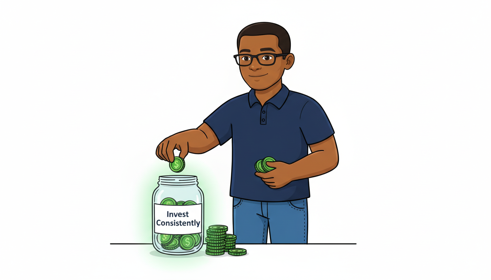
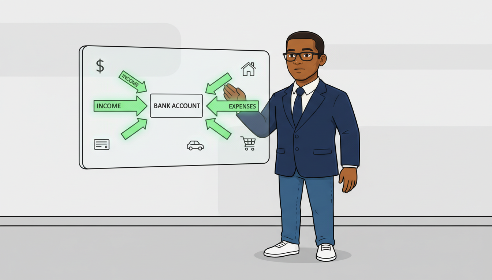
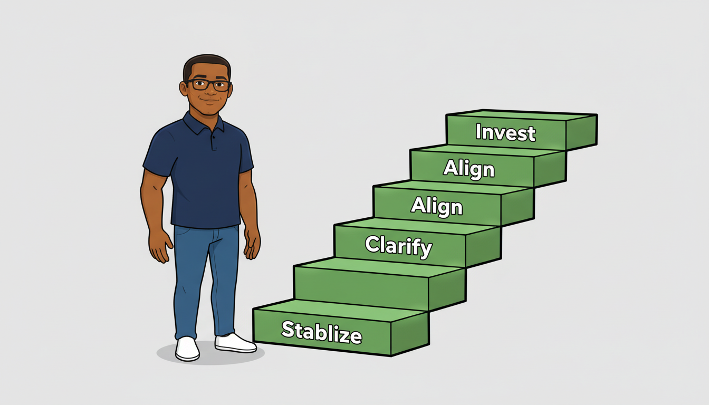

Through calm, psychology-driven explainer videos, we help professionals understand why money feels stressful — and how to build long-term wealth with clarity and discipline.
Clarity Capital is a behavioral wealth education platform focused on helping working professionals build long-term financial stability through clear thinking and disciplined strategy.
Why do smart people still feel financially behind?
Why does earning more not always reduce stress?
Why does lifestyle inflation quietly erase progress?
Through calm, high-quality animated explainer videos, Clarity Capital breaks down personal finance, investing, money psychology, and long-term wealth building into thoughtful, realistic conversations.We explain how habits, identity, and decision-making patterns shape long-term wealth outcomes more than income alone.
We simplify investing principles, compound growth, and financial discipline in a calm, understandable way — without hype or noise.
We break down emergency funds, debt management, margin, and lifestyle design to help professionals reduce money anxiety.
We explore comparison, income pressure, financial insecurity, and the emotional side of wealth building in your 20s, 30s, and 40s.
Most financial content moves fast and chases trends.
Clarity Capital is built differently.
Our content is designed for professionals who want sustainable wealth — not financial entertainment.
Clarity Capital reaches working professionals in high-income markets who are actively interested in:
If you are a brand aligned with long-term financial growth, contact us to discuss sponsorship, collaboration, or partnership opportunities.
Email: kelechukwuogochukwu@gmail.com
Clarity Capital collaborates with brands aligned with long-term financial growth and professional audiences—investing platforms, financial tools, productivity software, education products, and trusted services. If your brand supports clarity, stability, and responsible wealth building, let’s talk.
📩 kelechukwuogochukwu@gmail.com
© Clarity Capital. All content is for educational and entertainment purposes only and does not constitute financial, legal, or investment advice. All characters, illustrations, and animations are original creations used for storytelling and explanation.